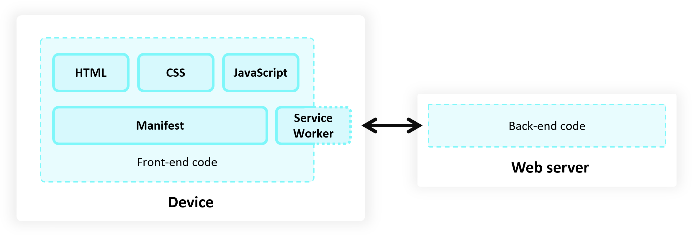

Introduction to PWAs
Traditional web applications break down when network connections fail or become unstable. Progressive Web Applications solve this limitation by utilizing modern browser APIs to create resilient experiences.

Core Characteristics
- Reliable: Load instantly and never fail, even in uncertain network conditions.
- Fast: Respond quickly to user interactions with smooth animations and scrolling.
- Engaging: Feel like a natural app on the device, with immersive user experiences.